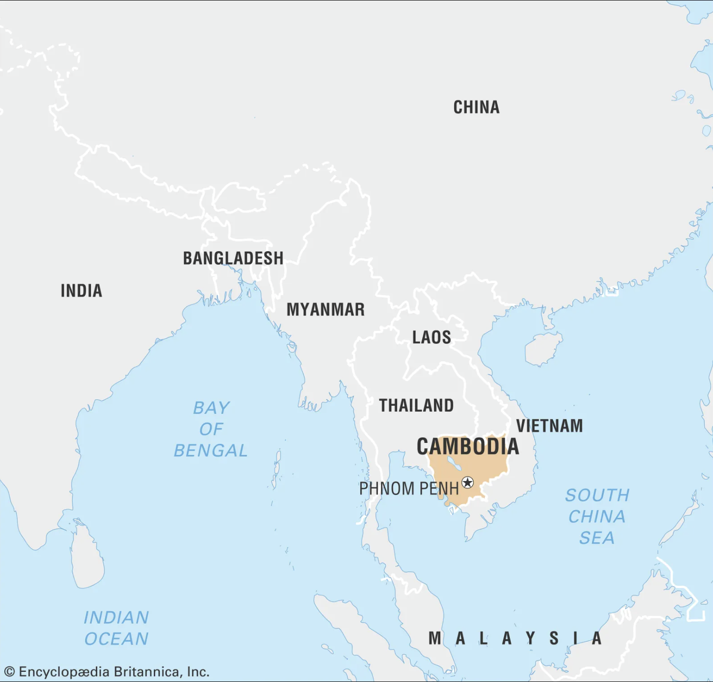
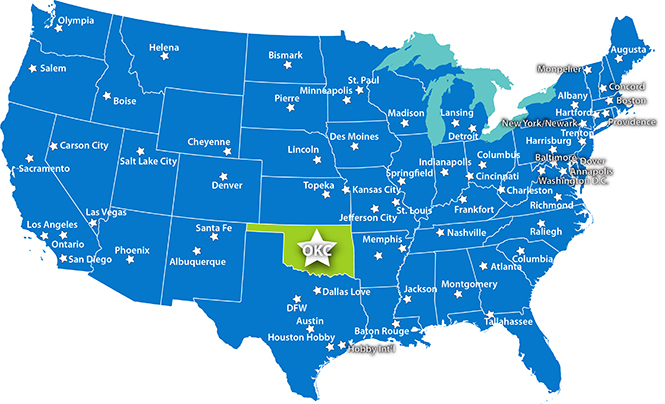
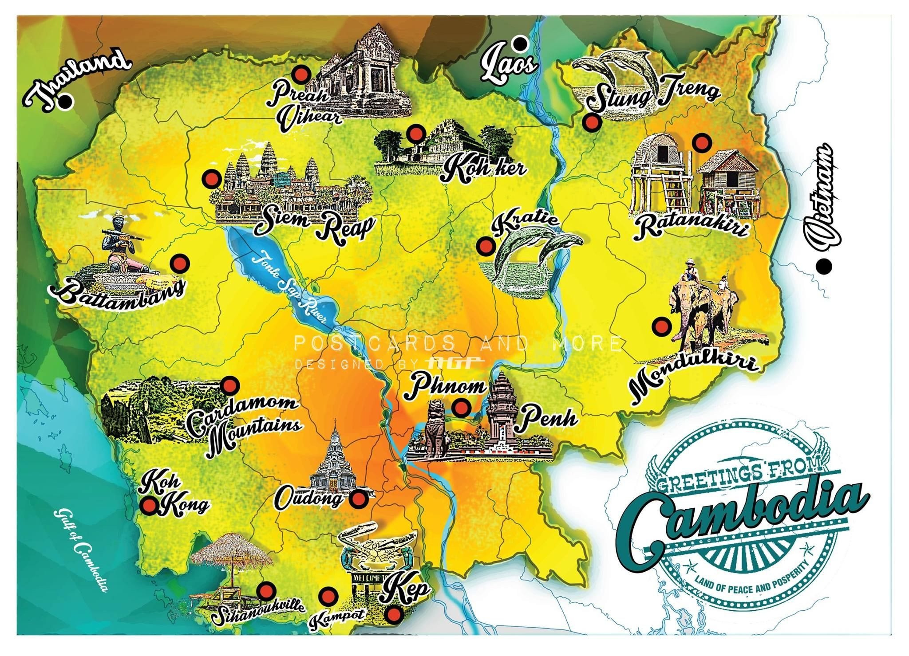

About Cambodia
 Cambodia,[a] officially the Kingdom of Cambodia,[b] is a country in Mainland Southeast Asia. It borders Thailand to the northwest, Laos to the north, Vietnam to the east, and has a coastline along the Gulf of Thailand on the southwest. It spans an area of 181,035 square kilometres (69,898 square miles), and has a population of about 17 million.[15] Its capital and most populous city is Phnom Penh. The Kingdom of Cambodia is the official English name of the country. The English Cambodia is an anglicisation of the French Cambodge, which in turn is the French transliteration of the Khmer កម្ពុជា (Kâmpŭchéa, pronounced [kampuciə]). Kâmpŭchéa is the shortened alternative to the country's official name in Khmer ព្រះរាជាណាចក្រកម្ពុជា (Preăh Réachéanachâkr Kâmpŭchéa, pronounced [preah riəciənaːcak kampuciə]. The Khmer endonym កម្ពុជា Kâmpŭchéa derives from the Sanskrit name कम्बोजदेश Kambojadeśa, composed of देश Deśa ("land of" or "country of") and कम्बोज (Kamboja), referring to the descendants of Kambu (a legendary Indian sage from the ancient Indian kingdom of Kamboja).[23] The term Cambodia was already in use in Europe as early as 1524, since Antonio Pigafetta cites it in his work Relazione del primo viaggio intorno al mondo (1524–1525) as Camogia.[24]
Cambodia,[a] officially the Kingdom of Cambodia,[b] is a country in Mainland Southeast Asia. It borders Thailand to the northwest, Laos to the north, Vietnam to the east, and has a coastline along the Gulf of Thailand on the southwest. It spans an area of 181,035 square kilometres (69,898 square miles), and has a population of about 17 million.[15] Its capital and most populous city is Phnom Penh. The Kingdom of Cambodia is the official English name of the country. The English Cambodia is an anglicisation of the French Cambodge, which in turn is the French transliteration of the Khmer កម្ពុជា (Kâmpŭchéa, pronounced [kampuciə]). Kâmpŭchéa is the shortened alternative to the country's official name in Khmer ព្រះរាជាណាចក្រកម្ពុជា (Preăh Réachéanachâkr Kâmpŭchéa, pronounced [preah riəciənaːcak kampuciə]. The Khmer endonym កម្ពុជា Kâmpŭchéa derives from the Sanskrit name कम्बोजदेश Kambojadeśa, composed of देश Deśa ("land of" or "country of") and कम्बोज (Kamboja), referring to the descendants of Kambu (a legendary Indian sage from the ancient Indian kingdom of Kamboja).[23] The term Cambodia was already in use in Europe as early as 1524, since Antonio Pigafetta cites it in his work Relazione del primo viaggio intorno al mondo (1524–1525) as Camogia.[24]
In 802 AD, Jayavarman II declared himself king, uniting the warring Khmer princes of Chenla under the name "Kambuja".[16] This marked the beginning of the Khmer Empire. The Indianised kingdom facilitated the spread of first Hinduism and then Buddhism to Southeast Asia and undertook religious infrastructural projects throughout the region. In the 15th century, it began a decline in power (the Post-Angkor Period) until, in 1863, it became the French Protectorate of Cambodia. After the Japanese occupation of Cambodia during the Second World War, it gained independence in 1953. The Vietnam War extended into the country in 1965 via the Ho Chi Minh and Sihanouk trails. A 1970 coup installed the US-aligned Khmer Republic, which was overthrown by the Khmer Rouge in 1975. The Khmer Rouge ruled the country and carried out the Cambodian genocide from 1975 until 1979, when they were ousted in the Cambodian–Vietnamese War. The Vietnamese-occupied People's Republic of Kampuchea became the de facto government. Following the 1991 Paris Peace Accords which formally ended the war with Vietnam, Cambodia was governed by a United Nations mission (1992–93). The UN withdrew after the 1993 Cambodian general election, decided by around 90% of registered voters. The 1997 coup d'état consolidated power under Prime Minister Hun Sen and the Cambodian People's Party (CPP). While constitutionally a multi-party state,[17] CPP dominates the political system and dissolved its main opposition party in 2017, making it a de facto one-party state.[18] The UN now designates it a least developed country.[19] Cambodia is a member of the United Nations, ASEAN, the RCEP, the East Asia Summit, the WTO, the Non-Aligned Movement and La Francophonie, and a dialogue partner of the Shanghai Cooperation Organisation.[20][21] Agriculture remains the dominant economic sector, with growth in textiles, construction, garments, and tourism leading to increased foreign investment and international trade.[22] It is among the most vulnerable countries to climate change.
Cambodia is the size of Oklahoma

